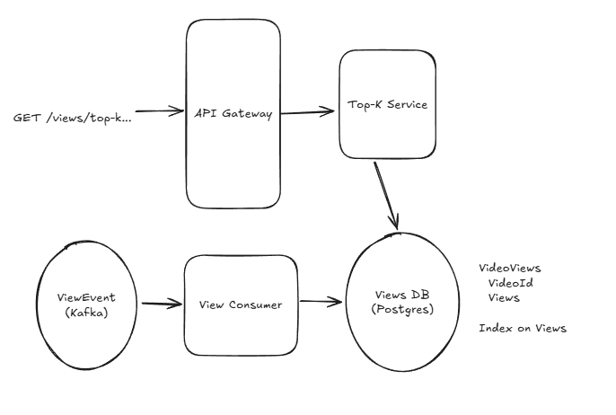
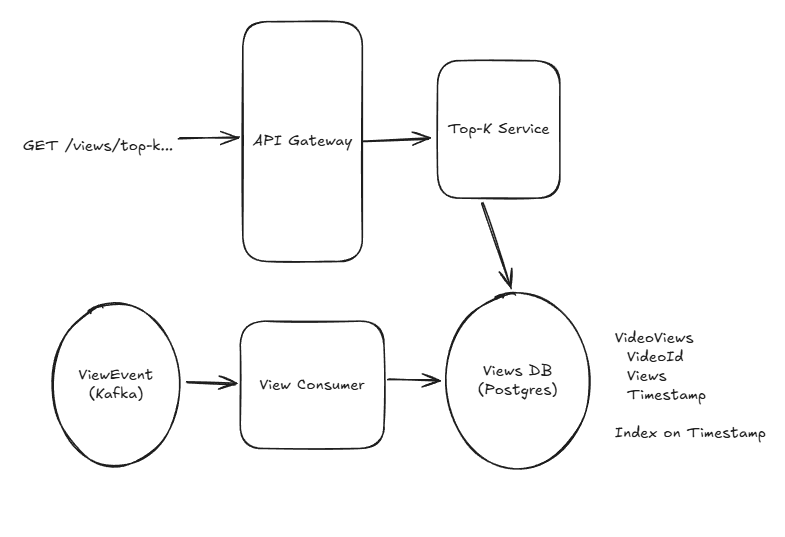
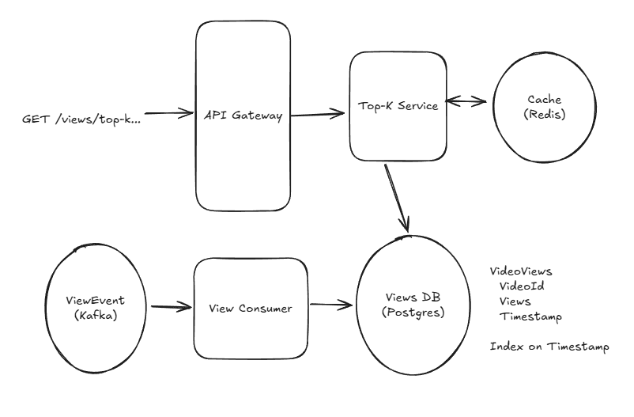
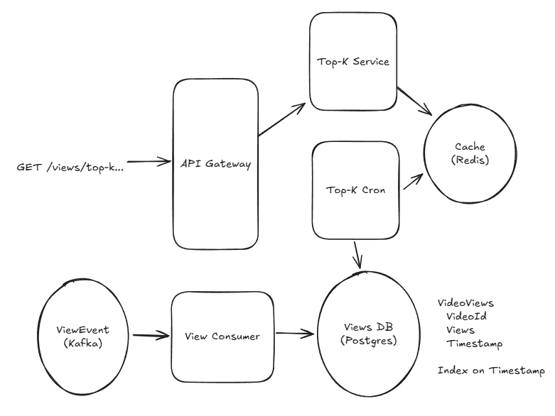
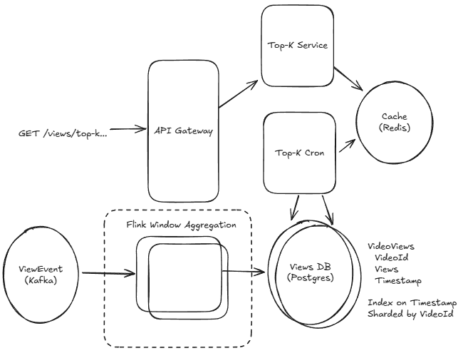

YouTube Top K.
Ask targeted question to get the specific scope of the design.
At any moment we will be able to query precisely the top K most viewed videos for the last one hour 1 day one month.
Get the idea of the data - Youtube shorts get 70 billion of views per day and 1 hour of youtube content is uploaded every seconds.
Functional requirement.
In Top K videos design a small change in the requirement can dramatically impact the design . The target to get the most viewed videos is not so difficult the important part arises when we go for a specific time.
We need to understand what time period or windows the system needs to support like last one hour 1 day one month
When we were talking about the duration it's better to discuss about windows, there are mainly 2 primary types of window used in streaming system the sliding window and the tumbling windows.
The sliding window the last one hour is the time between T-1 hour and T hours example the current time is 10:08 then the last one hour time is between 9:08 and 10:08.
The tumbling window is teh last full hour that start and end on an hour boundary. The time between [Floor(T - 1 hour, 'hour')] and [Floor(T, 'hour')] example the current time is 10:08 then the last full hour time is between 9:00 and 10:00.
We can proceed to tumbling window - there might be some ambiguity in the requirement will change as required.
It is important to mention the time period we are going to support say designing an arbitrary time period system meaning top K videos for the month of June 2025 in October 2025. In this case it becomes a simple time series TV queries type of problem there's nothing to design we can't really store the data so there is no way of precompute.
There should be range for the size of the top cake get a practical idea of clients requirement let's say for application of top key 1k is in a build limit. In case you want to query the top 1,000,000 videos so it's more likely to load the full data set provided ban on the system.
Core Requirements.
Client should be able to query the Top Gear videos for all time up to a maximum 1K result
Client should be able to create a tumbling windows of one hour day or month and all time up to Max of 1K results
Further design arbitrary time. Arbitrary starting and ending point.
Non functional requirements.
Understanding the top key calculation is carried out views from YouTube videos are events that happen at a real point button distributor system there will be some delays in processing these events.
For a particular video say at 9:59:00 the view increased by 1 count but it took time to arrive into the system say at 10:00:55 How long should we wait for the events to be processed given a generous of one minute buffer time but when a view happens and it can include into our system.
We will try to give the correct answer but most probably approximate the correct answer because it should be available so giving a return is more important.
The latency of the system say the system is respond within 10 millisecond we have to precompute the results of the cache won't take much time so we can achieve this latency.
Get an approximate size would be very useful calculating the top case song played by a single user in Spotify can be done on a single CPU but for YouTube it's going to be massive we need to see how many videos are going to be watched and how many views are going to be processed per second so we know how to scale the system.
Core requirements.
The system at most manage One minute delay between the view occur and getting calculated into the system.
The latency 10 millisecond.
The system should handle massive number of views and massive number of videos.
Set up.
First we'll design A sub optimal spacing system that actually fulfills the requirement for example calculate the top game we use for all time and then we will extend the support for the time windows
Define the core entities - There are some basic entities to build the API videos, views, time window.
API or system interface
GET /views/top-k?window={WINDOW}&k={K} -> { videoId: string, views: number }[]
For variable length result sets we will consider pagination but for this example we are limiting the response to no more than one K result so pagination is less of a concern.
Do not waste much time on trivial things get to them interesting part of the design it's very important as a senior developer to distinguish between more complex space and more trivial piece.
High level design.
The target is to make a simple design and then optimize it mention the bottleneck that are there in the design dononet wait for the interview to
Client should be able to query the top key videos for all time Max up to 1K result.
The system will store all time top key videos we will add some counters for each videos and we'll query the top videos from the list
It will not accept a view API call the recent Kafka stream of ViewEvent topic present that will consume the details. The videos shown to the user will be recorded into the topic the ViewEvent topic is partitioned by video ID and there will be simple consumer service that will pull the data from the topic and update to the postgres database.

The view consumer gets the data from the Kafka stream and keeps the counter for the video ID in the postgres DB.There will be a lot of writes into the postgres DB .
We need a way for users to query the top key videos the postgres database already has the values we need to add an index to the table and query it a Top K service can handle this particular query and return the response.
The cost in this system is that in every write we need to update the view index and the SQL database can be complex so the write operation can take a simple O(1) append to O(log n) update to the index.
Client should be able to query tumbling windows of 1 hour, day, month.
We need to extend the system to support time window queries. We need to change the table schema to include a timestamp column. We need to set this column to be the timestamp of the hour of the view event, There will be one row for each video that has been viewed at least once in an hour
It means there will be many rows of videos that have been viewed multiple times over several hours. The number of writes is not changing as we're still writing one for every views that happens. We are storing multiple row for videos so the number of rows is more. We will fix it in later part.

The read side it needs to update to the time window inputs. In the SQL it is easy to add the timestamp and also add index in the timestamp column.
SELECT "videoId", SUM("views") as "views",
FROM VideoViews
WHERE "timestamp" >= {windowStart} AND "timestamp" <= {windowEnd}
GROUP BY "videoId"
ORDER BY SUM("views") DESC LIMIT {k};
Mention that scan billions of row is a big deal.
Deep Dives.
How to cut down the number of queries to the db.
There are lot of db calls to get the top k in case million requests for top k comes to the service then there will be trouble.
The requirement mention that there is 1 min of grace period when the video view happened and the data added into the result.
The buffer will be used to cache or pre compute - its is mainly the read problem so the first thought should be scaling read pattern.
There are like good solution - cache the top k for each time window and a great solution - precompute the top k for each time window.
Cache the top k for each time window
Simple and elegant put a distributed cache by the top-k service like Redis or Memcached. Return the result and in case not in cache then pre compute and store in cache with TTL of an hour.
The cache entry with the key like top-k: {windwow}:{truncated_timestamp} and the value will be the list of top k videos for that time window. The cache will be updated every 1 minute with the new top k videos for that time window.

Issue - When the cache expires then there will be huge request and it will break the SLA as the time should be no longer than 10s ms.
We can partially solve by coalescing requests meaning only allowing one request per server a given time window to the database, have all the other requests wait for that response. The SLA will not be solved.
Precompute the top k for each time window
Adding a cron to the system on fixed intervals will precompute the top k for each time window and warms the cache and the request that are coming will be to the cache and never to the db.

It will solve the SLA issue and the cron running in fixed intervals and it has time to "get ahead" of the expiration that would have happened.
Issue - Operation complexity and what will happen when the cron fails?
How to monitor the cron jobs?
Short answer will store the cache result for like more hours then service will give stale data.
There are lot more to design in the system unless they ask we can park the topic and come back later time permits.
How to handle the massive write in the db.
There will be lots of write to the db lets assume the amount of write then will decide optimization.
We can consider big and move on and in general when there is deeper infra design then better to show off 😜
Thumb rule time permits then do the math else do it when it is needed to and when it influence the design.
The calculation is simple 70B views/day / (100k seconds/day) = 700k tps
Modern db handle 10k+ writes per second per node.
Storage needed -
Videos/Day = 1 hour content/second / (6 minutes content/video) * (100k seconds/day) = 1M videos/day
Total Videos = 1M videos/day * 365 days/year * 10 years = 3.6B videos
We have to find out how big the table of id and count Naive Storage = 4B videos * (8 bytes/ID + 8 bytes/count) = 64 GB
Every time we keep a set of views for all videos we need 64 GB of storage.
Sharding Ingesting - To handle the write throughput we will do the big thing first sharding. The topic viewEvent is partitioned by videoId.
To scale write sharding, partitioning and batching are first line of defence. The view consumer is scaled horizontally by spinning instance to read from each partition. The shard will have partial view of the subset of videos.
When write of a view it is assigned to a shard based on the video Id. The view consumer for the partition reads te view event from the topic and fires off a write to the db for the shard.
We want to bring the throughput of the db down to 10K TPS( Transaction per second) we need to shard the db into 70 instances. Its huge given the task of the trivial work.
The value 70 got by the total write rate per db node. The eatimates rate 700k TPS and when db to manage 10k TPS then 700k/10k = 70 shards. Each shard take each slice of the traffic.
When using the shard the single SQL query to get top k result is not a single query and we need to query each shard and merge the results (easy way using Citus). Its easy get the top k from each shard and sort and get the global top k.
Batching Ingestion - The 70 shard is a bit wasteful for simple function.
There is one case like total 4 billion videos will not get the view the small group of videos will get the huge count like Taylor Swift and all. In that case we dont have to write for each view and better to batch up the writes for each videos and flush the batch periodically.
Flink is a stream processing framework that helps up handling batch and aggregation. Flink has checkpoint and no need to worry about loing data or issue like event delay.
In the Flink solution will use BoundedOutOfOrdernessWatermarkStrategyto handle late events and will tell Flink that we are okat to wait upto say 30 sec and will use the tumbling window of 1 hour to aggregate the views for each video.
Flink is reading from Kafka and when anything goes dow flink rewind the checkpoint offset in the Kafka topic.

The Flink is getting individual event and output the sum of views per video on a i hours interval.
There will be no write every sec its a good amount of write per hour and as the db is spreach across shard its fine and db handle bulk update much better than individual writes.
The number of write will be also less (2-100x) as we are adding the sum of many views in a single write. The shard count can be reduced to 5-10 number.
How to optimize the top k queries?
Use a Min-Heap of size K per shard. Each shard maintains its own heap. The Top K service queries all shards in parallel, collects K results per shard, does a final merge sort and returns the global Top K. Since we already precomputed via Cron → Redis, this query path is only hit on a cold start.
🧠 Summary & Mnemonics — Connect the Design
One-liner: "Events stream into Kafka, Flink batches them, sharded DB stores them, a Cron precomputes them, Redis serves them fast."
🔑 Mnemonic: "K-FACTS"
| Letter | Concept | What it does |
|---|---|---|
| K | Kafka | Streams ViewEvent topic — partitioned by videoId |
| F | Flink | Aggregates & batches views per tumbling window; handles late events via BoundedOutOfOrdernessWatermarkStrategy (30s grace) |
| A | Aggregate → Sharded DB | Flink outputs (videoId, hour, sumOfViews) → written to 5–10 sharded Postgres nodes (was 70 without batching) |
| C | Cron | Runs every minute, precomputes Top K for each window, warms the Redis cache before TTL expires |
| T | Tumbling Window | Fixed hour/day/month boundaries — [Floor(T-1h,'h'), Floor(T,'h')] — simpler than sliding, agreed with interviewer |
| S | Serve via Redis | Top K Service reads from Redis in < 10 ms; key pattern: top-k:{window}:{truncated_ts} |
🗺️ Design Conversation Flow (connect the dots)
1. CLARIFY → Sliding vs Tumbling? (Pick Tumbling) | K ≤ 1K | 1-min grace
2. ESTIMATE → 70B views/day → 700K TPS → need batching + sharding
3. BASELINE → Kafka → Consumer → Postgres (All-time counter + timestamp col)
4. PROBLEM 1 → 700K TPS too high for DB → Flink batching (2–100× write reduction)
5. PROBLEM 2 → 70 shards too many → Flink reduces to 5–10 shards
6. PROBLEM 3 → Million read requests for Top K → Redis cache TTL 1 min
7. PROBLEM 4 → Cache cold-start breaks 10 ms SLA → Cron precomputes every minute
8. MERGE → Per-shard Min-Heap(K) + parallel merge for global Top K
⚡ Quick-Recall Card
WRITE PATH: ViewEvent → Kafka (by videoId)
→ Flink (tumbling window, late-event watermark)
→ Sharded Postgres (5-10 shards, bulk upsert/hr)
READ PATH: Client → Top K Service → Redis (hit 99%+)
→ DB (miss, merge from shards, store in Redis)
← Cron keeps Redis warm every 60s
SCALE TRICKS: Batch writes (Flink) → fewer shards
Precompute (Cron) → no SLA spikes
Coalesce reads → no thundering herd
Min-Heap per shard → O(n) merge instead of full sort